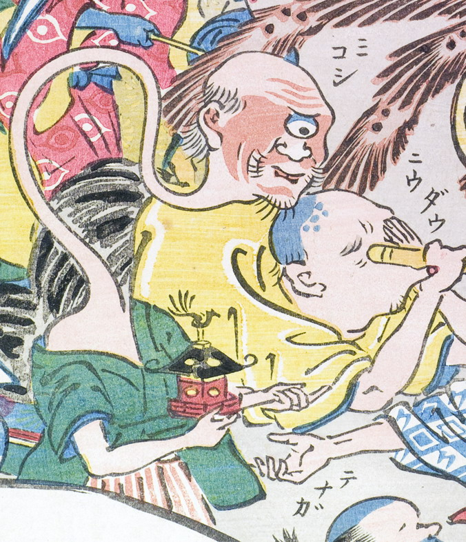

見越し入道；ミコシニュウドウ，一つ目；ヒトツメ，禿げ頭；ハゲアタマ，男；オトコ

首が長く一つ目で禿げ頭の男。手には神輿を持っている。
著作者：玉園／出典：親書誌：U426_nichibunken_0145：画本西遊記百鬼夜行ノ圖；エホンサイユウキヒャッキヤギョウノズ／日付：2009／資源識別子：U426_nichibunken_0145_0007_0000
Copyright (c)2010- International Research Center for Japanese Studies, Kyoto, Japan. All rights reserved.